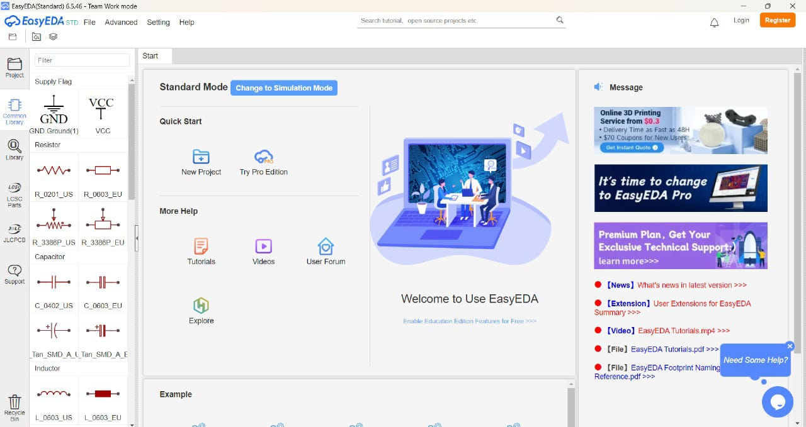

🧠 What is EasyEDA?
EasyEDA is a free, browser-based EDA (Electronic Design Automation) tool used for designing and simulating circuits, creating PCB layouts, and generating Gerber files. It’s perfect for beginners and professionals due to its simple interface and powerful features.
💡 Why Use EasyEDA?
- No installation – works online
- Easy drag-and-drop interface
- Access to thousands of components and libraries
- Instant schematic-to-PCB conversion
- 3D preview for realistic PCB visualization
- Direct connection to PCB manufacturing (like JLCPCB)

📂 How to Open & Start a New Project
EasyEDA is a free and powerful online PCB design platform that works directly in your browser—no need to install software. Follow these simple steps to start designing your circuit:
-
🔗 Visit: Go to
https://easyeda.com in your web browser.
-
👤 Sign Up or Log In: If you're a new user, click on Sign Up and create an account using your email. If you already have one, simply Log In.
-
➕ Start a New Project:
After logging in, you'll be taken to the EasyEDA dashboard. Click the "New Project" button (usually at the top-left).
-
📘 Choose Project Type:
A pop-up will ask you to select between:
- Schematic: For drawing your circuit diagram
- PCB: For designing the physical board layout
Start with Schematic first, and you can convert it to PCB later.
-
✏️ Name Your Project: Give your project a clear name, like LED_Blinker_Circuit, and click Create.
✅ Now you're ready! You'll see a blank working area where you can place components, connect wires, and design your first circuit.
🧰 How to Add Components
After creating a new project in EasyEDA, the next step is to add electronic components (like resistors, LEDs, ICs, sensors) to your circuit design. This is done using the component library located on the left side of the EasyEDA screen.
-
📚 Open the Library: On the left-hand panel, click on the "Libraries" tab. This opens a large list of available components.
-
🔍 Search for Components: Use the search bar at the top to look for any component. For example, type resistor or LED and press enter.
-
➕ Add to Design Area: Click the “Place” button next to the component, or simply drag and drop it into your working space (the blank area in the middle).
-
👥 User Contributed Tab: This tab gives you access to pre-made components shared by other users. These are helpful if you're looking for modules or ready-made IC packages.
-
🧲 Snap to Grid: To keep your components aligned and neat, use the grid and snap options (usually found in the toolbar at the top). This helps make your schematic look clean and professional.
✅ Once you've placed the components, you can move, rotate, or delete them just like in drawing tools. This is where your circuit starts to come to life!
🎨 View in 2D / 3D
After you've completed your circuit design (schematic), it's important to see how your actual PCB will look before manufacturing. EasyEDA allows you to visualize your board in both 2D (flat top view) and 3D (realistic view). This helps in spotting mistakes, checking component placement, and understanding how the board will appear physically.
-
🧾 Convert to PCB: Once your schematic is ready, click the “Convert to PCB” button (usually on the top toolbar). This changes your diagram into a real PCB layout view with pads, traces, and components.
-
🖼️ Switch Views: After converting, you’ll see your board in 2D mode. To switch to 3D view, use the tab or button that says “3D Viewer” (found in the top right or in the menu).
-
🌀 Explore the Board: In the 3D Viewer, you can zoom in/out using your mouse wheel, and rotate the board by dragging with the mouse. This lets you see how every part will look on the real PCB.
✅ The 2D view helps you adjust tracks and component placements. The 3D view ensures everything fits properly and looks professional before sending it for manufacturing. It’s like testing your board visually!
💾 How to Save & Export
Once your schematic or PCB design is ready, it’s important to save your progress and export files for manufacturing. EasyEDA gives you easy ways to save, share, and generate industry-standard files.
-
💾 Saving Your Work: Press Ctrl + S anytime to save your project. You can also click “File” → “Save”. It saves your work online under your EasyEDA account.
-
📤 Exporting for Manufacturing: Go to File → Export → Gerber to generate Gerber files. These are special files used by PCB manufacturing companies to produce your board. EasyEDA also shows a preview before downloading.
-
🌐 Sharing Your Project: Use the “Share Project” option if you want others to view, copy, or edit your design. This is helpful for team projects or getting help from the community.
✅ Always double-check your design before exporting. Gerber files are what factories use to make your actual PCB — so exporting properly is a key final step!
🧲 Useful Tools on Left Panel
EasyEDA provides a powerful tool panel on the left side of the screen. These tools help you design, connect, simulate, and organize your electronic circuit quickly and accurately.
-
🔌 Wire Tool: This tool lets you draw electrical connections (wires) between component pins. Simply click to start a wire and drag to the next pin. It ensures that the signal flows correctly in your circuit.
-
✋ Drag Tool: Used to move components around your schematic or PCB layout. You can also rotate parts by right-clicking or using the rotate button to align them better.
-
⏚ Ground & ⚡ Power Symbols: These predefined symbols allow you to add power sources (like VCC, +5V) and ground (GND) into your circuit. They're essential for circuit operation and must be used in almost every design.
-
📏 Measurement Tool: Lets you measure the distance between two points on your PCB layout. Useful for spacing and ensuring design rules are met.
-
🧪 Simulation Tool: This button lets you simulate your circuit before physically building it. You can view voltage, current, and waveforms using virtual tools to catch design errors early.
-
📦 Component Library: Located on the left side, this library helps you search and drag electronic components like resistors, capacitors, ICs, and sensors into your workspace.
-
📐 Grid & Snap Settings: Helps you align components neatly. You can turn grid snapping on or off based on your design needs.
Mastering these tools will speed up your design process and make your circuit cleaner and easier to debug!
⌨️ EasyEDA Shortcut Keys
Using keyboard shortcuts in EasyEDA speeds up your designing process. Below are the most important and commonly used shortcuts every PCB designer should know:
- W: Start wiring between components
- M: Move selected component
- R: Rotate selected component
- Del: Delete the selected component or wire
- Ctrl + C: Copy selected component
- Ctrl + V: Paste copied component
- Ctrl + Z: Undo last action
- Ctrl + Y: Redo the undone action
- Ctrl + S: Save the project
- Ctrl + X: Cut the selected component
- Ctrl + A: Select all components
- Ctrl + G: Group selected items
- Ctrl + U: Ungroup grouped items
- Spacebar: Rotate during component placement
- Alt + Drag: Move canvas around
- Ctrl + Mouse Scroll: Zoom in/out
- F5: Refresh the canvas
- ESC: Cancel current action/tool
Tip: Practice these shortcuts while building your schematic or PCB to improve your speed and efficiency.